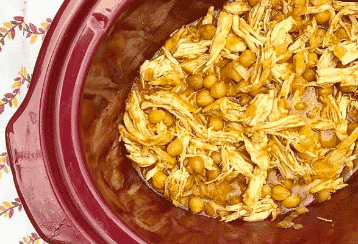

Crockpot Curry Chicken

The Simplest, Tastiest Crockpot Chicken
This is a quick and easy, protein-filled crockpot recipe.
Ingredients
- 1-2 chicken breasts
- 1/2 onion, diced
- 1 tsp paprika
- 1 tsp curry powder
- 1/2 tsp salt
- 1/3 stick of butter in little slices
- 1/4 cup honey
- 2-3 tbsp Dijon mustard
- 1 can chickpeas, drained and rinsed
Steps
- Put the diced onion in the bottom of the crockpot.
- Heavily season the chicken breasts on both sides in the paprika, curry powder, salt, and pepper and put it in the crock pot. I cut my chicken breast up into smaller strips so there's more surface area covered with the seasoning.
- Add the drained chickpeas.
- Top with the butter (in slices), honey, and dijon mustard.
- Cook on LOW 4-6 hours.